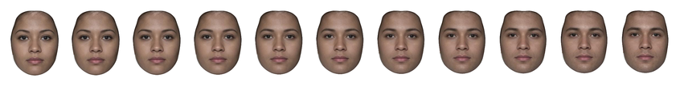
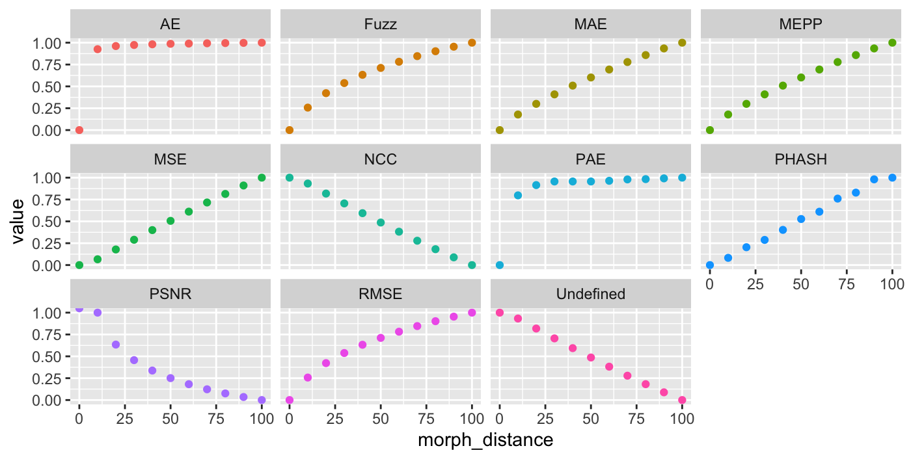
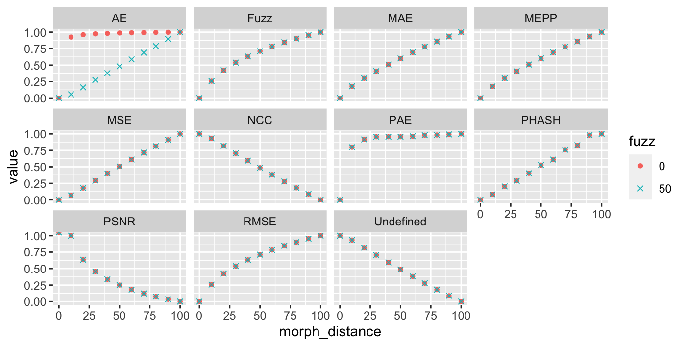
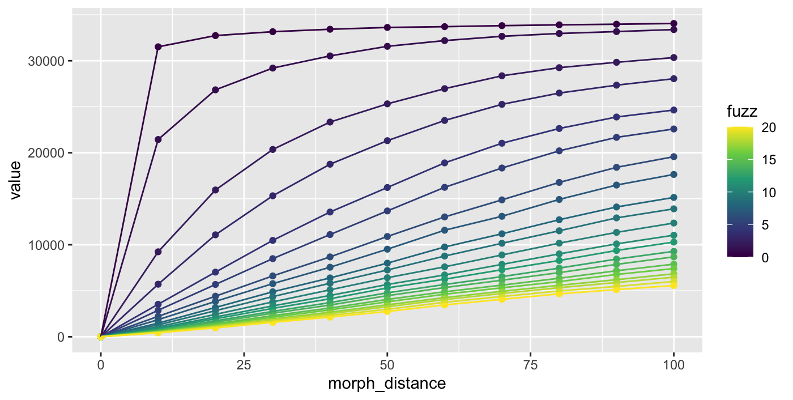

This article explores the use of {magick}’s image_compare function in
the context of morphed images, since I couldn’t find any clear guides to
what it was doing. I’ve implemented this for webmorph stimuli with the
compare() function.
While this metric does capture something about similarity between morphed images, it is unlikely to be of any use as a metric for similarity between non-morphed images (e.g., it won’t be able to tell you if two face images are of the same person or not).
Create images to compare
stimuli <- demo_stim()
s <- continuum(stimuli[1], stimuli[2]) |>
mask("face") |>
subset_tem(features("face")) |>
crop_tem()
plot(s, nrow = 1)
Calculate metrics
Using all the available metrics, calculate similarity of each image to the first image.
mtypes <- magick::metric_types()
names(mtypes) <- mtypes
m <- lapply(mtypes, compare,
stimuli = s,
ref_stim = 1,
fuzz = 0,
scale = TRUE) # results scaled from 0 to 1
PSNR is Inf when the test and reference image are
identical, so the highest non-infinite value scales as 1.0.
Check fuzz settings
m2 <- lapply(mtypes, compare,
stimuli = s,
ref_stim = 1,
fuzz = 50,
scale = TRUE)Fuzz only does something for AE.

fuzzes <- seq(0, 20, 1)
names(fuzzes) <- fuzzes
m3 <- lapply(fuzzes, compare,
stimuli = s,
ref_stim = 1,
metric = "AE",
scale = FALSE) # don't scale for this comparison
Conclusions
- Increases with morph distance:
- very strong negative exponential decay at 0 fuzz; more linear with higher fuzz: AE
- strong negative exponential decay: PAE
- slight negative exponential decay: Fuzz, RMSE
- linear: MAE, MEPP, MSE
- no idea: PHASH
- Decreases with morph distance:
- linear: NCC, Undefined
- slight exponential decay: PSNR